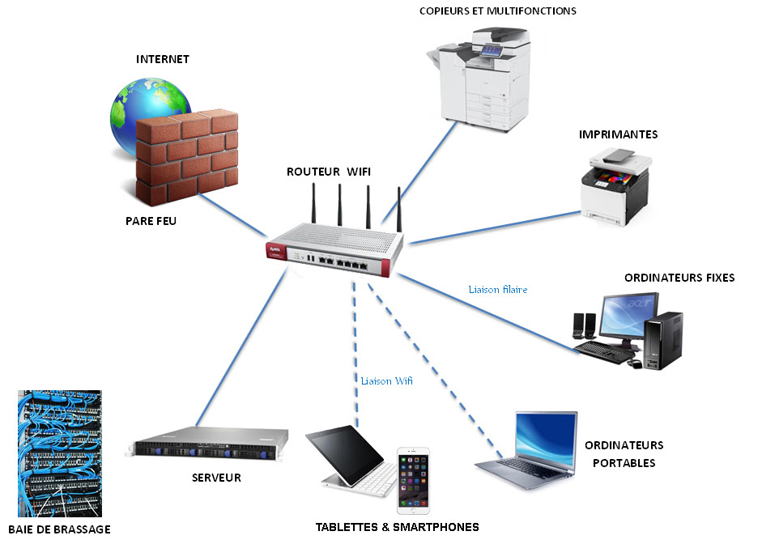

Audit, conseil, distribution, installation et maintenance.
En nous confiant la gestion de votre parc informatique, vous optez pour la mise en place d’un système fonctionnel, disponible et sécurisé.
PrintDocs vous propose des solutions informatiques performantes afin d’optimiser votre organisation, grâce à son équipe technique spécialisée en infrastructure réseau sur tous les systèmes d’exploitation existants.
Nous effectuons une analyse minutieuse de vos besoins afin de vous proposer une structuration optimisée. Une solution qui sera testée et validée par notre service technique, qui s’adapte à votre demande.
L’ensemble des outils destinés à la gestion de votre système d’information sont sélectionnés et testés pour une intégration maximale dans votre fonctionnement de tous les jours.